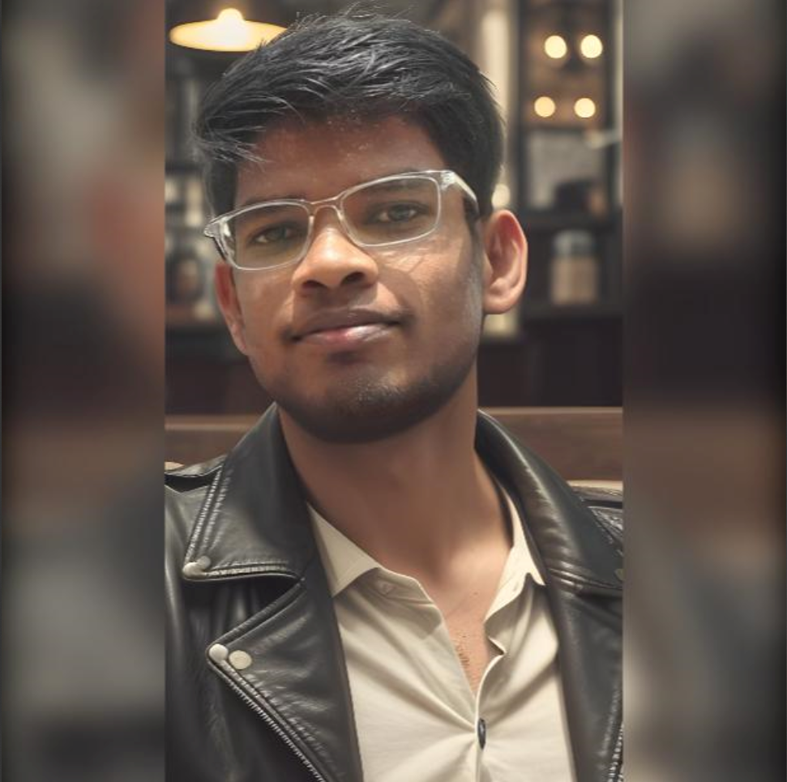

Dnyaneshwar Avadhutwar

About Me
I'm Dnyaneshwar Dharmpuri Avadhutwar, a 3rd-year BTech student with a passion for Web Development and AI, ML (Data Science). With a unique blend of skills in Data Structures and Algorithms (DSA), Java, Python, C, AI/ML learning, and Web Development, I bring value to every project I take on.
As a curious and driven student, I've honed my skills in programming languages and developed a keen interest in AI, ML, and Data Science. My work is driven by a desire to create innovative solutions and a commitment to lifelong learning.
In this portfolio, you'll find a collection of my most recent and notable projects, showcasing my ability to apply theoretical concepts to real-world problems. I'm always looking for new challenges and opportunities to grow, so feel free to reach out and let's collaborate!
I'm excited to share my projects and experiences with you. Let's connect and create something amazing together!
Education
-
Zero To Mastery Academy
joined july 2024
- Shri Guru Gobind Singhji Institute of Engineering and Technology, Vishnupuri, Nanded
Bachelor of Technology
BTech Computer science and engineering
2022 - 2026
-
Unacademy
2021 - 2022
MHTCET 96.40%ile,
jee maths 95%ile
-
Saraswati English School (jr college) nanded
Higher secondary examination CGPA 9.7
2019 - 2021
-
Zilla Parishad High School palaj
Secondary School examination
CGPA 9
2009 - 2019
learning skills
- Data Structures and Algorithms (DSA)
- Programming languages: Java, Python, C
- AI/ML learning
- Web Development
certification
dsa in java
Hobbies
singing,painting,reading,etc.
contact me
phone:+919545496038
gmail-id:dnyaneshwaravadhutwar@gmail.com